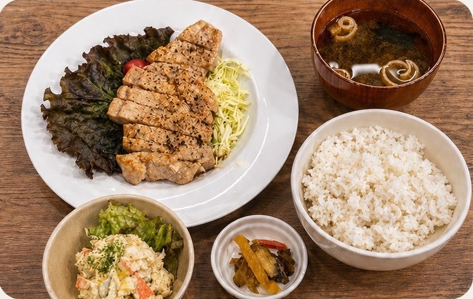
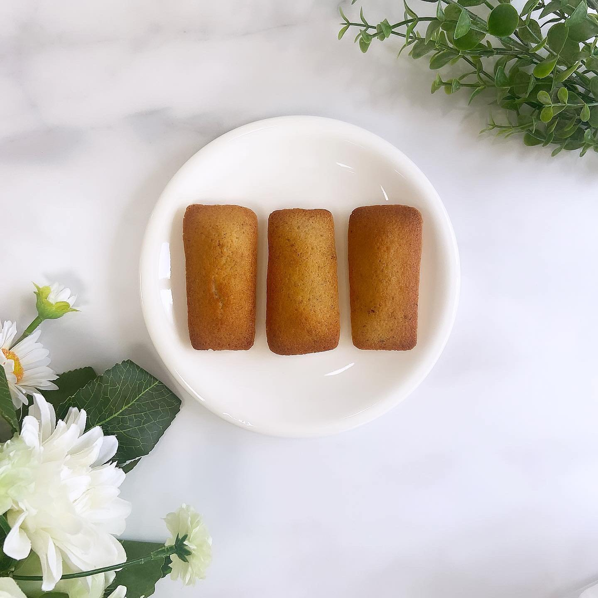
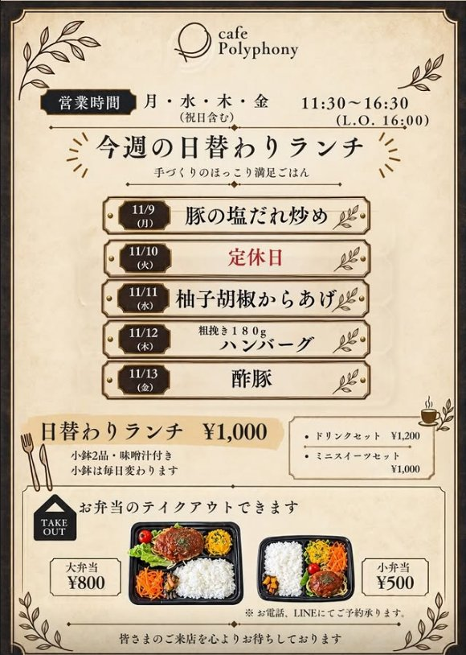
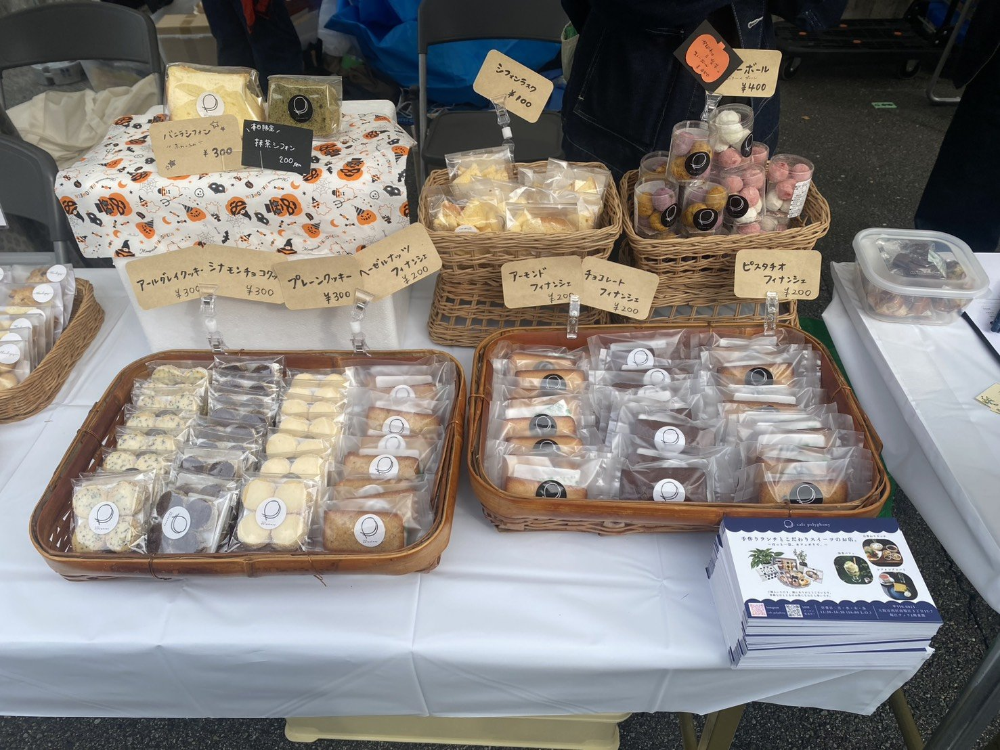
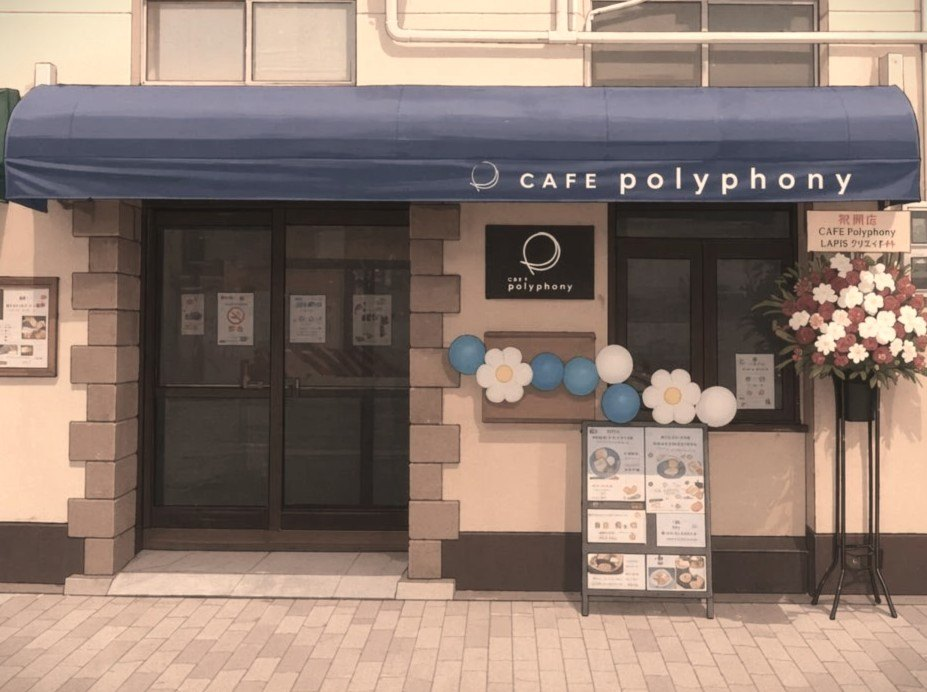

日替わりランチ
しっかり食べたい日のお昼ごはん。ドリンクセットは1,200円〜。
メニュー画像を開く ↗MINAMIHORIE, OSAKA
きちんと食べて、ほっとひと息。
日替わりのごはんと、お菓子の焼ける香り。
いつもの街に、あなたの居場所を。
西長堀駅 6番出口から徒歩約5分


DAILY LUNCH
メインに、ごはん・小鉢2品・味噌汁を添えて。小鉢は毎日変わります。
ドリンクセット ¥1,200〜 ／ ミニスイーツセット ¥1,000〜
CHECK THE LATEST MENU
日替わりの内容や最新のお知らせは、公式LINE・Instagram・Xでご案内しています。ご来店前に、最新の投稿をご覧ください。
LINEで最新メニューをチェック ↗
NEWS
営業時間は月・水・木・金 11:30〜16:30（L.O.16:00）です。
オープン当日のランチメニューを公開しました。
5月11日（月）のグランドオープンが決まりました。
カフェポリフォニー公式ウェブサイトをオープンしました。
BAKED WITH LOVE
フランス産小麦と発酵バター。素材のおいしさを大切に、ひとつひとつ丁寧に焼き上げています。香ばしいフィナンシェや、ほろりとほどけるクッキーを、お茶の時間のおともに。
フィナンシェ 各種 ¥200
クッキー 各種 ¥300
スノーボールクッキー ¥400
店頭価格・税込。通販の商品・価格・販売状況はストアをご確認ください。
焼き菓子をオンラインで見る ↗ 店頭の焼き菓子メニュー ↗JOURNAL & NEWS

地域のこと
西区民まつり「文化と健康のつどい」に、カフェポリフォニーの焼き菓子が並びました。フィナンシェやクッキーを通して、地域のみなさんと出会う一日に。お立ち寄りくださったみなさま、ありがとうございました。
カフェの日常をInstagramで ↗OUR PLACE, YOUR PACE
ひとりでゆっくり過ごす日も、誰かと話したい日も。カフェポリフォニーは、南堀江の日常にひらかれたコミュニティカフェです。食事やお茶をきっかけに、人と人がゆるやかにつながる場所を目指しています。
MEET OUR TEAM
Kitchen Leader
どなたでも安心して過ごせる空間づくりを大切にしています。
Pâtissier & SNS
お菓子とSNSを通して、お店の日常やメニューの魅力をお届けします。
Support
細かいところにも気がつく、みんなの頼れるサポーターです。
COME SAY HELLO

LET’S TALK
お弁当は、お電話・LINEでご予約いただけます。貸切をご希望の方は、日時・人数・内容をお知らせください。対応可否を個別にご案内します。
KEEP IN TOUCH
日替わりメニューや、カフェのお知らせをお届けします。